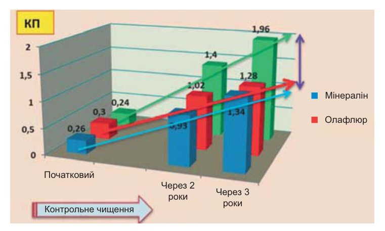
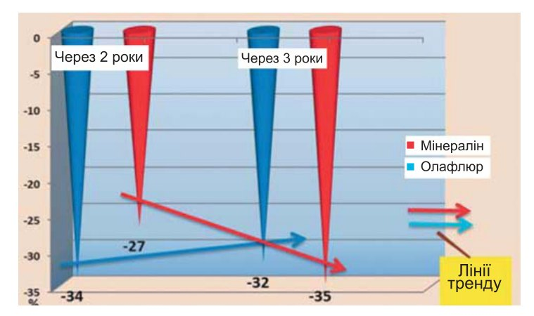
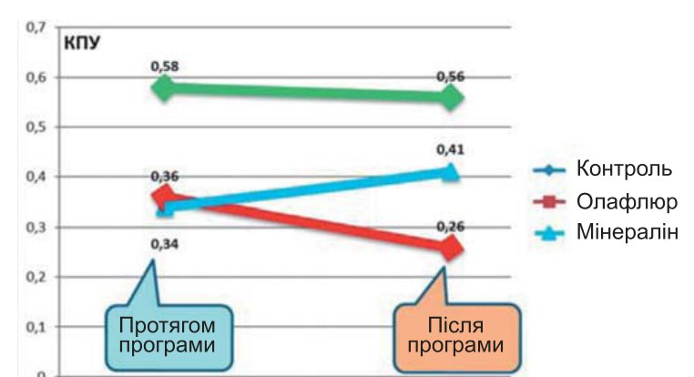

Профілактика · журнал «ДентАрт» 2014 №2 (75)
Ефективність зубних паст без фтору в поліпшенні стоматологічного здоров'я дітей
MEDICAL EFFICIENCY OF THE FLUORIDE-FREE TOOTHPASTES IN THE IMPROVEMENT ORAL HEALTH OF CHILDREN
Метою цього дослідження була оцінка медичної ефективності дитячих зубних паст без фтору і з низькою концентрацією амінофториду в поліпшенні стоматологічного статусу дітей молодшого шкільного віку у віддалені терміни спостережень.
Методи. Дворічна програма контрольованого чищення зубів для дітей перших класів у віці 6-7 років здійснювалася в школах м. Мінська в рамках затвердженої Міністерством охорони здоров'я Республіки Білорусь Національної програми профілактики карієсу зубів і хвороб періодонту. Як засоби гігієни рота використовували зареєстровані в Білорусі дитячі м'які зубні щітки і дитячі зубні пасти R.O.C.S.: у школі №24 — зубну пасту без фтору з активним компонентом «Мінералін» — комплексом мінеральних речовин Ca, P, Mg і ксиліту (клінічна група А); у школі №111 — зубну пасту, що містить «Олафлюр» з низьким вмістом фтору — 500 ppm F- (група Б). Групою порівняння В були першокласники в сусідній школі №130, які не брали участі у програмі контрольованого чищення зубів, але були охоплені стандартною шкільною лікувально-профілактичною програмою, що включає уроки здоров'я, планову санацію рота і навчання методам чищення зубів. Кількість дітей у групах див. у таблиці.
Діти клінічних груп А і Б брали участь у щоденному (у шкільні дні) чищенні зубів під наглядом і за допомогою вчителів. Процедура здійснювалася після шкільного сніданку в кімнатах гігієни, обладнаних необхідною кількістю раковин і дзеркал. Учителів попередньо навчили методу чищення зубів і проінструктували з питань зберігання засобів гігієни рота з дотриманням необхідних санітарно-гігієнічних умов, узгоджених із санітарно-епідеміологічною службою.
Стоматологічні дослідження вели клінічно калібровані дитячі лікарі-стоматологи в стандартних умовах шкільних стоматологічних кабінетів за допомогою звичайного набору зуболікарських інструментів. Повторні огляди проводили в терміни 6, 12 і 24 місяці від початку програми і через 1 рік після її завершення. Стоматологічний статус дітей оцінювали за допомогою спрощеного індексу гігієни рота Гріна-Вермильона — OHI-S (1964), ясенного індексу Сілнеса-Лоу — GI (1963) і КПУ постійних зубів. Для реєстрації індексів використовували карту ВООЗ, 1995 р. Статистичну обробку отриманих матеріалів провадили у програмі «Excel Statistics» з визначенням критеріїв Стьюдента.
Результати та обговорення. У цій роботі проаналізовано результати трьох стоматологічних оглядів дітей: базового, наприкінці 2-річної шкільної програми контрольованого чищення зубів і через 1 рік після завершення програми, тобто через 3 роки після базового огляду.
У групах А, Б, В початковий індекс гігієни рота Гріна-Вермильона (OHI-S) варіював у межах 1.66-1.74 од. (незадовільна гігієна), без статистично значущих відмінностей (р>0.05). Наприкінці дворічної програми контрольованого чищення зубів у школах у дітей групи А, які використовували зубну пасту без фтору, початковий середній OHI-S 1.74±0.04 зменшився на 0.95 од. (55%) до рівня 0.79±0.03 (р<0.01). Надалі, через рік після закінчення програми, індекс гігієни збільшився до рівня 0.95±0.04 (р<0.01), зберігаючись у категорії задовільного рівня гігієни рота, що вказує на стійкість навичок, набутих у школі протягом попередніх двох років чищення зубів під наглядом учителів та медперсоналу. Ясенний індекс GI у цій групі до кінця програми зменшився на 0.45 од. (57%) з базового 0.79±0.01 (легкий хронічний гінгівіт) до рівня 0.34±0.03 (відсутність гінгівіту на комунальному рівні) (р<0.01). Через рік після закінчення шкільної програми середній GI збільшився до 0.68±0.02 (р<0.02), що вказує на недостатню гігієну рота в домашніх умовах і, можливо, використання менш ефективних зубних паст. Однак на комунальному рівні ясенний індекс 0.68 од. (дуже легкий гінгівіт) близький до прийнятного (≤ 0.6 од. GI).
У групі Б, що використовувала зубну пасту з низьким вмістом фтору, спостерігалася аналогічна динаміка досліджуваних індексів гігієни рота і гінгівіту. Початковий середній OHI-S 1.66±0.03 (незадовільний рівень гігієни рота) зменшився на 0.88 од. (53%) до рівня 0.78±0.04 (задовільний рівень гігієни рота) (р<0.01). Надалі, через рік після закінчення шкільної програми, індекс гігієни збільшився до рівня 0.89±0.04 (р<0.05), зберігаючись у категорії задовільної гігієни рота. Ясенний індекс GI у групі Б до кінця програми контрольованого чищення зубів зменшився на 0.58 од. (73%) від базового 0.80±0.02 (легкий хронічний гінгівіт) до рівня 0.22±0.02 (відсутність гінгівіту) (р<0.01). При контрольному дослідженні дітей через рік після закінчення шкільної програми було виявлено суттєве збільшення середнього GI до 0.59±0.03 (дуже легкий гінгівіт) (р<0.02), що, як і в групі А, свідчить про недостатню гігієну рота в домашніх умовах і, можливо, використання менш ефективних зубних паст. Проте рівень GI через три роки був на 0.21 од. меншим, ніж на початку програми, що підтверджує високу ефективність дитячих зубних паст R.O.C.S. у профілактиці хвороб періодонту, оцінювану у віддалені терміни спостережень. Також була помітна вища ефективність «Олафлюр» у порівнянні з «Мінераліном» у профілактиці хронічних гінгівітів у дітей як з 2-річною програмою контрольованого чищення зубів (р<0.01), так і через 1 рік після завершення програми (р<0.05).
| Групи спостережень | n | Індекс гігієни OHI-S±SE | Ясенний індекс GI±SE | ||||
|---|---|---|---|---|---|---|---|
| Початковий | 2 роки | 3 роки | Початковий | 2 роки | 3 роки | ||
| А | 82 | 1.74±0.04 | 0.79±0.03 | 0.95±0.04 | 0.79±0.01 | 0.34±0.03 | 0.68±0.02 |
| Б | 74 | 1.66±0.03 | 0.78±0.04 | 0.89±0.04 | 0.80±0.02 | 0.22±0.02 | 0.59±0.03 |
| В | 77 | 1.71±0.03 | 1.17±0.02 | 1.43±0.03 | 0.74±0.02 | 0.63±0.02 | 0.72±0.03 |
У дітей групи порівняння В спостерігалося невелике поліпшення гігієни рота і незначне зниження інтенсивності хронічного гінгівіту, очевидно, завдяки урокам здоров'я і навчанню школярів методу чищення зубів та заходам профілактики карієсу і хвороб періодонту, що передбачалося умовами цього проекту. За 2-річний період спостереження середній OHI-S зменшився на 0.54 од., або на 32%, однак залишався на «незадовільному» рівні — 1.17±0.02 од. У групі «Мінералін» показник OHI-S був нижчим на 32% (р<0.01); у групі «Олафлюр» — нижчим на 33% (р<0.01). До кінця третього року спостереження індекс гігієни рота збільшився до рівня 1.43±0.03, можливо, з причини ослаблення шкільної просвітницької програми, яка у попередні два роки більше контролювалася в рамках цього проекту. У групах «Мінералін» і «Олафлюр» завдяки «слідовому ефекту» контрольованого чищення зубів і зубним пастам R.O.C.S. індекс гігієни рота був на задовільному рівні, нижче, ніж у групі порівняння, на 34% і 38% відповідно.
Середній GI за дворічний період спостереження зменшився на 0.11 од., або на 15%, залишаючись у категорії «легкий гінгівіт», у той час як у групах «Мінералін» та «Олафлюр» показники GI були у 2-2.8 раза нижчими (р<0.01). До кінця третього року спостереження ясенний індекс збільшився до вихідного рівня 0.72±0.03. У групі А — «Мінералін» — GI був меншим, ніж у групі порівняння, лише на 0.04 од. (р>0.05). «Слідовий ефект» у групі «Олафлюр» був помітнішим: GI був нижчим на 18% порівняно з контролем (р <0.05). Можливо, зубна паста з активним фторвмісним компонентом має стійкішу протизапальну дію, що також узгоджується з максимальним зниженням ясенного індексу (до рівня 0.22±0.02) у групі «Олафлюр» наприкінці дворічної програми контрольованого чищення зубів дітьми у школі.
Протикаріозний ефект зубних паст. Інтенсивність карієсу постійних зубів у першокласників на початку програми варіювала в межах від 0.24±0.12 до 0.3±0.14 КПУ без статистично достовірних відмінностей (p>0.05). Протягом 2-річної програми у школярів групи порівняння (група В) КПУ зубів збільшився на 1.16: з 0.24±0.12 (початковий рівень) до 1.4±0.13 (р<0.01). Через рік після закінчення програми спостерігався подальший ріст КПУ до рівня 1.96±0.15 (р<0.01). Ці дані були використані для порівняльної оцінки динаміки КПУ зубів у двох клінічних групах, залучених до 2-річної програми контрольованого чищення зубів у школах з використанням зубної пасти «Мінералін» (група А) і «Олафлюр» (група Б).
У групі «Мінералін» вихідний КПУ зубів 0.26±0.13 до кінця програми зріс на 0.67 до рівня 0.93±0.11 (р<0.01) і в наступний період спостереження, протягом одного року після закінчення програми, збільшився на 0.41 до рівня 1.34±0.14 (р<0.05). У порівнянні з даними контрольної групи, в групі «Мінералін» було зафіксовано редукцію приросту карієсу на 0.47 КПУ, або на 34%, до кінця програми. Після закінчення програми, за даними кінцевих значень КПУ зубів у групі «Мінералін» і в групі порівняння, 1.34±0.14 і 1.96±0.15 відповідно, редукція приросту карієсу в групі «Мінералін» становила 0.62 КПУ, або 32% (р<0.02).
У групі Б — «Олафлюр» вихідний КПУ зубів 0.3±0.14 до кінця програми зріс на 0.72 до рівня 1.02±0.12 (р<0.01) і в наступний період спостереження протягом одного року після закінчення програми збільшився на 0.26 до рівня 1.28±0.13 (р>0.05). У порівнянні з даними контрольної групи, в групі «Олафлюр» було зафіксовано редукцію приросту карієсу на 0.38 КПУ, або на 27%, до кінця програми чищення зубів. Після закінчення програми, за даними кінцевих значень КПУ зубів у групі «Олафлюр» і в групі порівняння, 1.28±0.13 і 1.96±0.15 відповідно, редукція приросту карієсу в групі «Олафлюр» становила 0.68 КПУ, або 35% (р<0.02). На всіх етапах спостережень — базовому, після двох років програми і через рік після її закінчення — статистично значущих відмінностей КПУ зубів у дітей груп А і Б не було (р>0.05). Подані вище дані проілюстровано на мал. 1.


Статистично значущих відмінностей даних КПУ постійних зубів між групами А і Б наприкінці 2-річної програми чищення зубів і через 1 рік після її закінчення, тобто до кінця третього року спостережень, не було. Однак простежувалися невеликі коливання відсотка редукції приросту карієсу протягом цих періодів. Так, у групі А — «Мінералін» — наприкінці програми відсоток редукції карієсу в порівнянні з групою порівняння становив 34%, тоді як у групі Б — «Олафлюр» — 27%. Протягом наступного року спостерігалися зворотні співвідношення між цими групами: 32% і 35% редукції КПУ зубів у групах А і Б відповідно (мал. 2). Цілком можна припустити, що у період контрольованого використання зубних паст R.O.C.S. «Мінералін» більшою мірою захищав зуби від демінералізації, ніж «Олафлюр». Однак після закінчення програми «слідовий ефект» «Олафлюр», до складу якого входить амінофторид, був вираженішим.
Дані про більш виражений «слідовий ефект» дитячої зубної пасти з амінофторидом підтверджуються при аналізі динаміки інкременту (приросту карієсу протягом року). На мал. 3 схематично показано мінливі тенденції значень інкременту протягом програми контрольованого чищення зубів і через 1 рік після її завершення. У групі порівняння наприкінці програми було встановлено найвищий інкремент — 0.58 КПУ постійних зубів. Протягом наступного року значення інкременту практично було таким самим: 0.56 КПУ. В обох групах, які брали участь у програмі чищення зубів, інкремент був значно меншим, ніж у групі порівняння: 0.36 КПУ в групі «Олафлюр» і трохи нижче, 0.34 КПУ, в групі «Мінералін». Через 1 рік після закінчення програми інкремент у групі «Мінералін» становив 0.41 КПУ, тоді як у групі «Олафлюр» він був значно меншим — 0.26 КПУ. Отже, протикаріозний захист «Олафлюр» не лише тривав після закінчення програми, але був більш вираженим у порівнянні з «Мінераліном», хоча обидві зубні пасти R.O.C.S. у цьому проекті були однаково високоефективними у профілактиці карієсу постійних зубів у дітей молодшого шкільного віку, без статистично значущих відмінностей кінцевих результатів.

Висновок
У довгостроковому клінічному дослідженні вивчено медичну ефективність дитячих зубних паст лінії R.O.C.S. у поліпшенні гігієни рота, зменшенні інтенсивності хронічних гінгівітів і редукції приросту карієсу постійних зубів у дітей молодшого шкільного віку. При використанні зубної пасти без фтору, з активною речовиною «Мінералін», до кінця дворічної програми індекс гігієни рота OHI-S у дітей зменшився на 55% від початкового незадовільного рівня; ясенний індекс GI зменшився на 57%, і спостерігалася редукція приросту карієсу постійних зубів на 34% у порівнянні з «пасивним» контролем. У групі дітей, які використовували зубну пасту «Олафлюр» з низькою концентрацією амінофториду (500 р.р.м. F-), індекс гігієни рота OHI-S зменшився на 53% від початкового незадовільного рівня; ясенний індекс GI зменшився на 73% і спостерігалася редукція приросту карієсу постійних зубів на 27%. За результатами спостережень дітей протягом одного року після завершення контрольованого чищення зубів у школах вдалося встановити виражений позитивний «слідовий ефект» зубних паст у збереженні задовільного рівня гігієни рота, прийнятного на комунальному рівні стану ясен і подальшого уповільнення приросту карієсу постійних зубів на рівні 32-35%. Обидві зубні пасти — «Мінералін» без фтору і «Олафлюр» з низьким вмістом фтору — були однаково ефективні у поліпшенні стоматологічного здоров'я дітей.